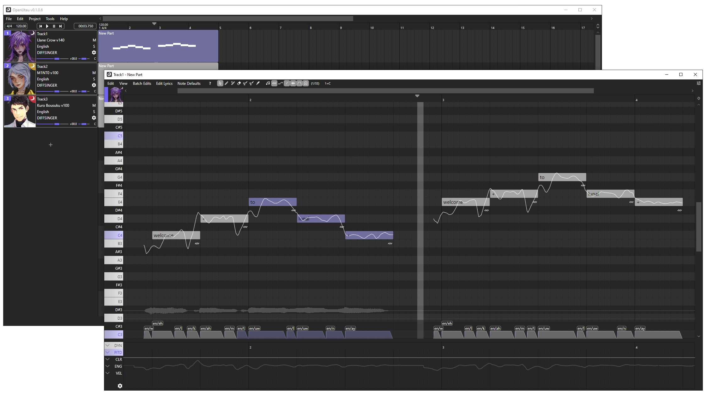
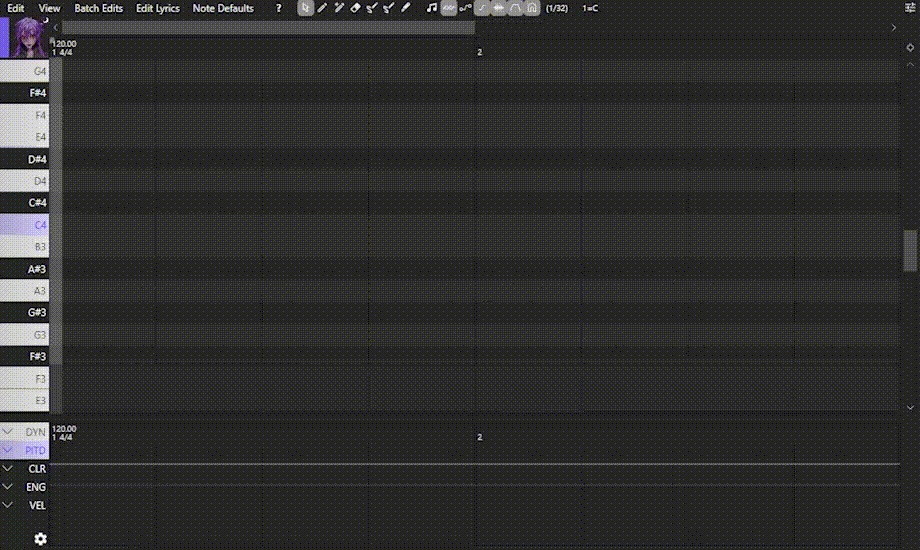
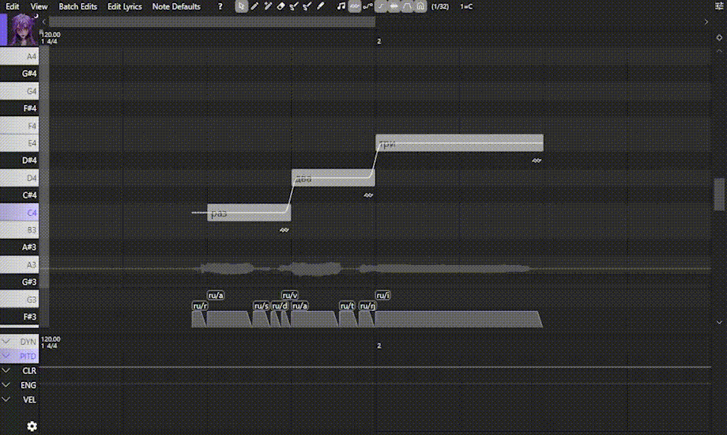
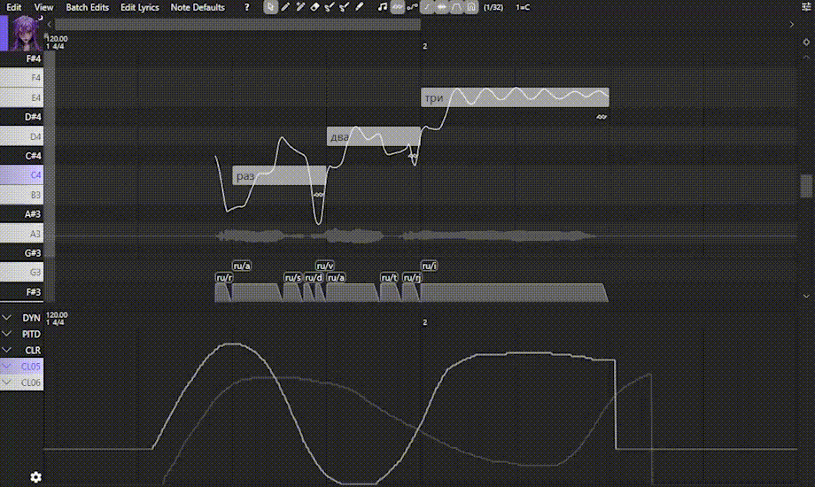
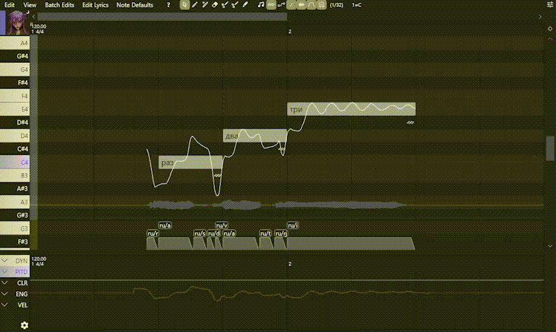

Installation
- Step 1. Download our Lunai Pack v150:
- Step 2. Download OpenUtau (Lunai Edition)

- Step 3. Unzip OpenUtau to the folder you want and run OpenUtau.exe
- Step 4. Drag and drop zip file with singer into main window. No need to unzip
- Step 5. Restart OpenUtau. Select singer on the track and enjoy!
Basic Features

Select singer and add new track
Here you can also select the phonemizer (dictionary) for singer. Right under the singers name you can click Default -> More... -> DiffSinger

Add notes and type in lyrics
Draw the notes using the Pen Tool and double-click to write the lyrics. You can switch between notes using Tab
You can also import MIDI / UST / VSQx and other formats by using File -> Import Tracks. UtaFormatix can help you convert to a different format

Render pitch
Right click on any of the notes and select Notes -> Load rendered pitch

Pitch drawing and phoneme timing change
Draw the pitch using the Draw Pitch Tool
Change the phonemes timings below by pulling them over the edge
Any pitch or timing changes you have made can be cleared by swiping with the right-clicked mouse button

Select vocal modes
Each singer has several tones of voice. Select the CLR (Voice Color) below to switch between them